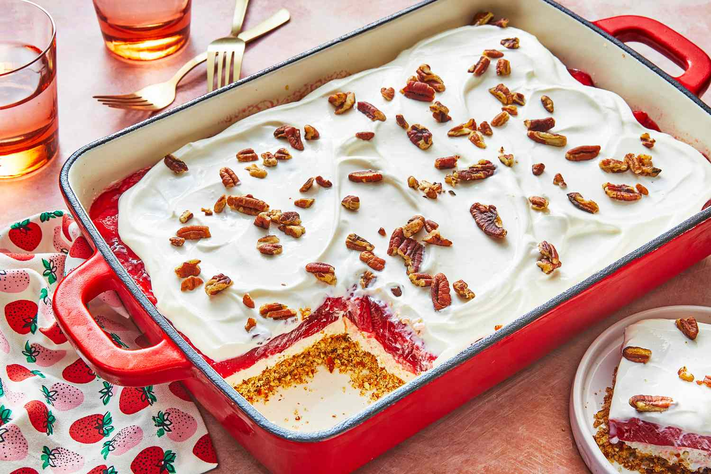

JELLO SALAD

Jello Salad Recipe
Jello Salad is a retro American dessert that was really popular in the 1960s. It’s usually made with flavored gelatin, fruit, and sometimes marshmallows, nuts, or even pretzels. Over the years this popular dish has transformed, to say the least, and now you can find several variations of jello salad.
INGREDIENTS NEEDED FOR JELLO SALAD
- 3 oz strawberry flavored gelatin
- 2 cups cottage cheese, small curd
- 20 oz canned crushed pineapple in juice (drained & juice reserved)
- 1/2 lb fresh strawberries
- 1 cup cold heavy whipping cream
- 1 tsp vanilla extract
- 2 Tbsp granulated sugar
STEPS
- Wash, remove the stems, and quarter the strawberries. Feel free to cut any large pieces in half again. Set the strawberries to the side.
- With a strainer and a small bowl, drain the crushed pineapples really well and reserve the pineapple juice.
- In a blender*, add the strawberry gelatin, cottage cheese, and ⅓ cup of the reserved pineapple juice. Blend until smooth then add the mixture to a large bowl.
- Next make the whipped cream. In a separate metal or glass bowl, preferably a bowl that has been chilled in the refrigerator, add heavy cream, vanilla extract, and granulated sugar. Use a hand mixer or stand mixer to whip the cream on high until stiff peaks form. Stop the mixer occasionally to test the stiffness of the peaks and to avoid over whipping.
- Now carefully fold the whipped cream into the strawberry gelatin mixture.
- Add the crushed pineapples and chopped strawberries to the bowl and carefully fold them into the whipped cream mixture until everything is evenly distributed.
- Refrigerate jello salad for at least 2 hours so the ingredients have a chance to set and chill before serving. Enjoy!
NUTRITION
- Serving: 1cup
- Calories: 295kcal
- Carbohydrates: 33g
- Protein: 9g
- Fat: 15g
- Sodium: 256mg
- Fiber: 2g